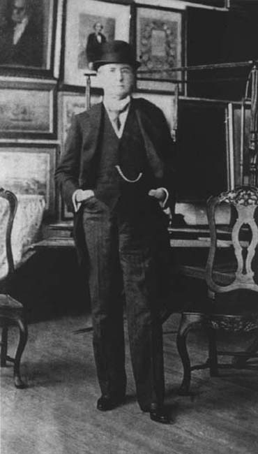

|
|  |
|
Adolfo P. Carranza en el Museo Histórico Nacional (1890s)
|
Carranza´s nephew, Adolfo, the editor of the prestigious and exquisite Revista Nacional and himself an amateur collector and historian, became the museum´s first director, restlessly writing to his upper-class peers to ask for donations. Carranza´s criteria were simple: all those whose ancestors had served in the armies of the independence wars were welcome to submit the portraits, uniforms and other personal belongings in their possession on public display, in a great conversion of domestic into officials fetishes. Also welcome were relics from the Paraguayan war and, to a lesser extent, the battles between unitarios and federales (in their great majority, objects from this period would belong to partisans of the 'unitarian' camp, as the museum emphatically took the side of the liberal, anti-Rosas historiography championed by Lamas and Bartolomé Mitre, both of whom sat on its founding committee).
|